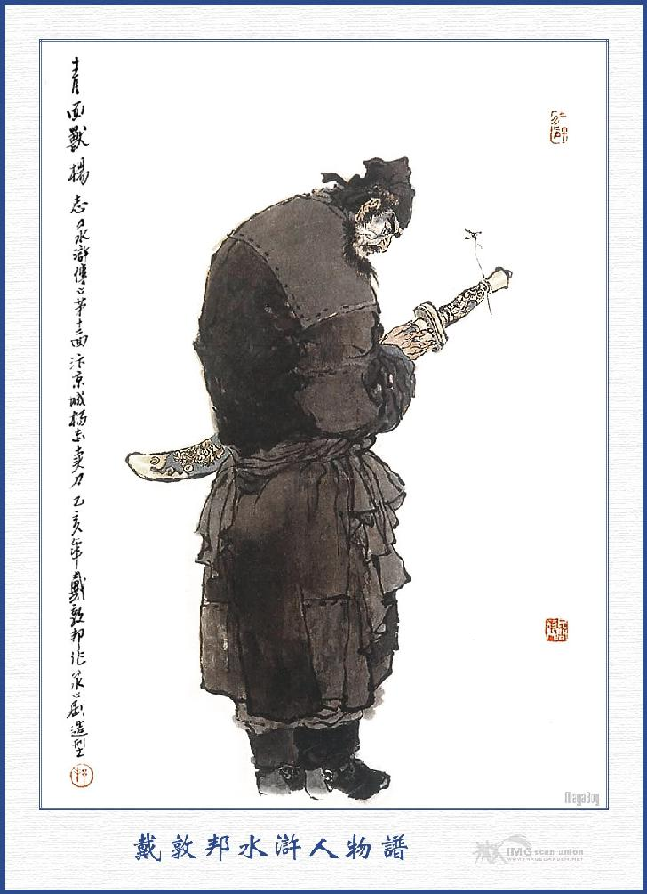
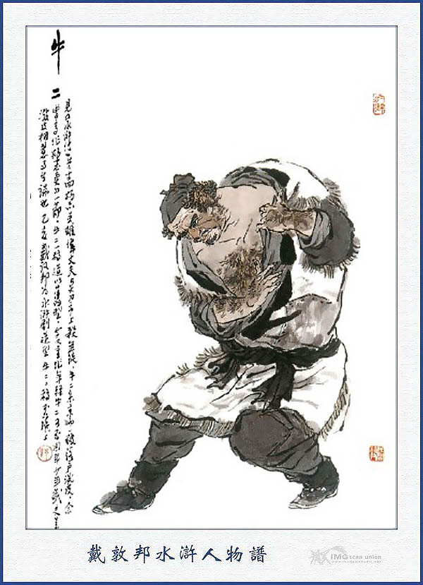
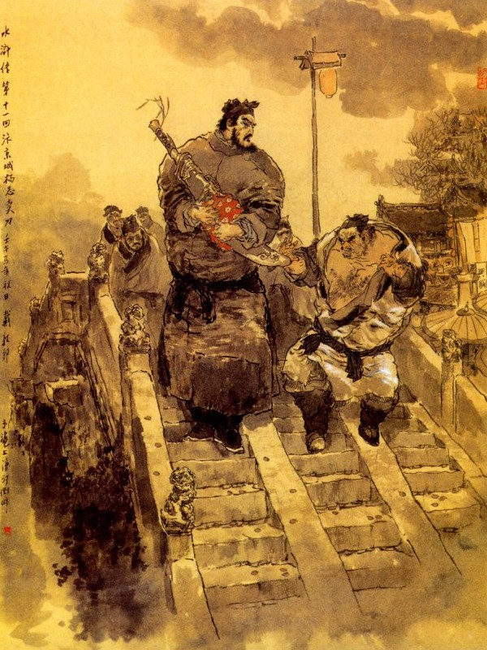

Lâm Xung thấy người kia múa đao đến đánh thì hai mắt trợn tròn xoe, hàng râu hùm dựng ngược rồi cũng giơ đao ra cự lại, hai bên kẻ đánh người đỡ, chống nhau ước chừng hơn ba mươi hiệp mà chưa rõ được thua. Khi đánh được độ hai mươi hiệp nữa, sắp quyết được thua thì chợt thấy tiếng trên đỉnh núi gọi to lên rằng:
- Hai vị hảo hán hãy khoan tay, đừng đánh nhau nữa.
Lâm Xung nghe vậy, nhảy tót ra ngoài vòng rồi hai bên cùng đứng dừng đao lại. Bấy giờ Vương Luân, Đỗ Thiên, Tống Vạn cùng mấy đứa tiểu lâu la xuống núi chở thuyền ra rồi đi đến chỗ hai người mà nói rằng:
- Hai thanh đao của hai vị hảo hán thực là thần xuất quỷ một không ai theo kịp, ông này là Báo Tử Đầu Lâm Xung là anh em chúng tôi, còn ông mặt xanh kia là ai, xin cho chúng tôi biết tên họ?
Người kia nói:
- Ta là Dương Chí, cháu Ngũ Hầu Dương Lệnh Công là dòng dõi ba đời cửa tướng, lưu lạc ở Quan Tây. Khi còn ít tuổi có thi võ cử rồi làm đến chức Điện Tư Chế Sứ Quân, sau đức Đạo Quân xây lăng vạn tuế, sai mười người Chế Sứ ra Thái Hồ, tải đá hoa về nộp kinh sư. Chẳng may đi đến giữa sông Hoàng Hà, bị cơn phong ba đánh đắm thuyền, mất cả đá hoa cho nên phải trốn đi nơi khác mà không dám về kinh nữa. Nay nhân nghe tin triều đình xá tội, ta định thu nhặt ít tiền để về kinh sư lo liệu ở Cơ Mật Viện mà kiếm kế an thân, dè đâu đi qua đây lại bị các ngươi đánh tên gánh thuê mà cướp mất, vậy các ngươi nên đem trả lại cho ta lập tức.
Lâm Xung nói:
- Nếu vậy ngài là Thanh Diện Thú Dương Chí đó chăng?
- Chính phải.
- Thế thì may lắm, xin mời Chế Sứ hãy vào chơi qua trong trại, xơi chén rượu suông đã rồi chúng tôi xin nộp lại gánh hành lý.
- Hảo hán đã nhận biết tôi thì xin trả lại gánh hành lý, còn hơn là cho tôi uống rượu.
- Mấy năm trước tôi vào thi ở Đông Kinh cũng có được nghe tiếng Chế Sứ, thế mà ngày nay lại được gặp ở đây, thực là may quá, thế nào cũng xin đón Chế Sứ vào chơi qua loa chứ không có ý gì khác cả.

DƯƠNG CHÍ
Dương Chí từ chối không được, đành phải theo lũ Vương Luân xuống thuyền mà đi vào sơn trại, Vương Luân cho tìm cả Chu Quý lên Tụ Nghĩa Sảnh, sai bắc bốn cái ghế chéo, để Vương Luân, Đỗ Thiên, TốngVạn, Chu Quý ngồi về bên tả, còn một bên hữu thì bắc hai cái ghế chéo, để mời Dương Chí, Lâm Xung ngồi. Đoạn rồi sai mổ trâu làm tiệc khoản đãi Dương Chí. Đương khi uống rượu, Vương Luân nghĩ thầm trong bụng: "Nếu ta lưu một Lâm Xung ở thì tất nhiên có điều không ổn cho ta, vậy bất nhược tiện đây giữ cả Dương Chí ở lại, để có tay địch thủ với Lâm Xung thì mới được.
Cho hay:
Mấy quân bé mệt ở đời.
Chưa đi đã sợ chưa ngồi đã kinh!
Những là lúng túng nghĩ quanh,
Chẳng qua thêm để vận mình mà chi?
Bấy giờ Vương Luân nghĩ vậy, liền đem chuyện Lâm Xung từ đầu đến cuối, thuật lại cho Dương Chí nghe, đoạn rồi bảo Dương Chí rằng:
- Cái này không phải là Vương Luân tôi muốn cử hợp Chế Sứ ở đây đâu. Nhưng tôi thiết nghĩ: Tôi đây đã bỏ văn theo võ, đến lạc thảo đất này mà Chế Sứ là người có tội, dẫu nay được tha rồi, nhưng cũng khó lòng được phục nguyên chức tước. Vả chăng hiện nay Cao Thái Úy lại coi giữ binh quyền thì tất nhiên hắn không dùng ngài được, vậy bất nhược ngài tạm dừng ngựa ở đây, để cùng nhau hưởng cái phú quý, kim ngân tửu nhục mà làm tay hảo hán có lẽ lại hơn, không biết ý ngài nghĩ sao?
- Các ngài có lòng như thế tôi lấy làm cảm ơn lắm, song tôi còn có một người bà con thân ở kinh sư, khi tôi làm việc quan có phiền lụy người ta nhiều lắm mà chưa sao tạ ơn lại được. Vậy nay tôi muốn trở về qua đấy một phen, xin các ngài trả lại hành lý cho tôi, bằng không thì Dương Chí tôi đành bỏ đấy mà đi tay không vậy.
Vương Luân cười rằng:
- Vậy thôi, Chế Sứ đã không ở thì chúng tôi cũng cưỡng bách làm chi. Nhưng xin ngài hãy khoan tâm ngồi đây một tối rồi sáng mai đi sớm.
Dương Chí cả mừng lưu lại ở đấy một tối. Sáng hôm sau Vương Luân lại làm rượu tiễn Dương Chí, đoạn rồi sai tiểu lâu la quảy hành lý đưa xuống dưới núi mà bái biệt rồi trở về lưu giữ Lâm Xung ở lại. Bấy giờ Dương Chí đi ra đến đường cái, tìm một người nhà quê thuê quảy gánh hành lý mà cho tên lâu la trở về sơn trại rồi thẳng đường trông nẻo Đông Kinh.
Khi tới Đông Kinh, Dương Chí tìm vào một tửu điếm để trọ rồi trả tiền cho đứa gánh thuê trở về. Cách vài hôm sau Dương Chí nhờ người đến đút lót ở Khu Mật Viện, để lo bổ Chế Sứ Điện Tư Phủ như cũ. Lúc ấy phải đem các thứ kim ngân tài vật để đưa chỗ nọ, tặng chỗ kia, đến khi hết sạch cả tư trang hành lý, mới xin được giấy khai phục trong Khu Mật Viện, nhưng còn phải đến trình Cao Thái Úy mới xong. Tới khi đến trình Cao Thái Úy, Thái Úy đem các lý lịch và giấy má ra xem một lượt rồi cả giận mà rằng:
- Ngươi cùng đi vận tải với chín tên Chế Sứ thì chín tên kia đã đem về giao nộp từ bao giờ rồi, duy còn có ngươi là đánh mất đá hoa mà thiện tiện trốn đi đâu mất, quan quân truy nã không ra, thế mà nay lại muốn phục chức hay sao? Tuy rằng ngươi đã có giấy tha, nhưng cũng không khi nào rửa hết tội danh mà phục chức được.
Nói xong đem các giấy má phê bỏ tất cả rồi đuổi Dương Chí ra ngoài Soái Phủ.
Cây con đâu có cái tổ chim Hồng!
Quân hèn đâu có cái lượng bao dung nổi người?
Dương Chí trở về nhà trọ, trong bụng lấy làm uất ức mà tự nghĩ một mình rằng:
- Lời nói của Vương Luân khuyên ta thế mà có lý. Nhưng hiềm vì nhà ta, vốn là tiếng tăm trong sạch xưa nay, lẽ nào ta lại đem cái đi thể của tổ tiên mà làm nhơ bẩn cho đành? Bởi vậy ta cũng muốn trở về đây để đem cái tài võ nghệ, cây cao ngọn giáo ra chốn biên đình, hoặc may lập được chút công danh để báo đền quan phụ thì cũng hả trong lòng một chút. Ai ngờ bị lão Cao Cầu nó cay nghiệt tàn nhẫn làm cho ta không còn kế chi mà xuất đầu được nữa, chán chưa!
Chàng nghĩ vậy, trong lòng lại phân vân khó chịu, đường xa tiền hết, đất khách quê người, không biết làm sao cho ổn được! Nhân nhớ đến ông cha ngày trước, còn để lại thanh bảo đao, xưa nay vẫn đeo luôn ở bên mình, liền nghĩ kế đem ra phố bán, để lấy ít tiền mà đi nơi khác lập thân, Khi đem ra bán, đứng ở phố Quần Ngựa, có tới mấy giờ đồng hồ cũng không thấy ai đến hỏi mua cả, chàng lấy làm nóng ruột, lại vác ra một chỗ náo nhiệt ở trên cầu Thiên Hán để bán. Dương Chí đứng một lúc thấy người ở hai bên phố đều la nhao nhao bảo nhau rằng:
- Cọp đã đến ta trốn đi.
Đoạn rồi người nào người ấy đổ xô nhau mà trốn vào trong ngõ. Dương Chí thấy vậy, nói lẩm bẩm một mình rằng:
- Họ nói quái lạ! Ở chỗ cấm thành này, còn làm gì có cọp đến đây được?
Nói đoạn xa trông thấy một anh đại hán, người đen chùi chũi, say rượu bứ bự đương chân nam đá chân chiêu đi đến.
Nguyên đó là một thằng vô lại, có tiếng ở kinh sư, vẫn thường gọi là Một Mao Đại Trùng Ngưu Nhị, xưa nay chỉ chuyên nghề rắc rối ở đầu đường cuối phố, gặp ai là cũng dây vào làm cho lôi thôi khó chịu mà quan tư ở Phủ Khai Phong không sao trị nỗi. Bởi vậy mà ai trông thấy cũng tránh mặt cho xa, không còn dám đi gần đến. Bấy giờ tên Ngưu Nhị đi đến trước mặt Dương Chí, dằng tay cầm lấy thanh đao xuống để xem rồi hỏi rằng:

NGƯU NHỊ

- Anh, của này định bán thanh đao bao nhiêu tiền?
Dương Chí đáp:
- Thanh bảo đao này của tổ phụ tôi để lại, tôi định bán lấy 3. 000 quan tiền.
Ngưu Nhị quát lên rằng:
- Đao ăn mày này lại bán đến ngần ấy tiền? Ta cứ mua 30 kẽm một con dao cũng thái được thịt, cắt được đậu rồi. Con dao khốn nạn này có cái gì tốt mà gọi là bảo đao?
- Thanh đao của tôi có phải như của đám hàng chợ đâu. Nó là bảo đao kia mà.
- Thế nào gọi là bảo đao?
Dương Chí nói:
- Một là có thể chặt đồng chặt sắt mà lưỡi không quằn, hai là thổi lông đi qua được, ba là chém người mà đao không có máu, thế cho nên gọi là bảo đao.
- Anh có dám cắt đồng bây giờ không?
- Anh cứ đem đến đây, tôi cắt cho mà xem.
Ngưu Nhị thấy nói, bèn chạy đến một cái hàng ở cầu, tảo lấy một món tiền đồng, để thành một chồng ở bên cầu rồi gọi Dương Chí rằng:
- Anh kia, nếu anh chặt đứt được thì ta trả cho 3. 000 quan.
Bấy giờ các người đứng xem, dẫu không anh nào dám đứng gần, song cũng đứng túm ở đằng xa mà nom lại. Dương Chí vén tay áo cầm đao, nhắm cho trúng rồi chém một nhát, cọc tiền đứt hẳn làm đôi. Những người đứng xem thấy vậy, ai cũng reo ầm lên.
Ngưu Nhị quát lên rằng:
- Reo cái gì thế? Anh này còn điều thứ hai, thế nào nữa?
Dương Chí nói:
- Điều thứ hai là thổi lông đi qua được, nếu cầm một sợi tóc thổi qua lưỡi đao thì tất đứt làm đôi.
Ngưu Nhị nói:
- Ta không chắc được như thế.
Nói đoạn nhổ ngay sợi tóc trên đầu, đưa cho Dương Chí mà bảo rằng:
- Anh thử làm cho ta xem?
Dương Chí tay tả cần sợi tóc đưa lên trước lưỡi dao rồi thổi một cái thực mạnh, sợi tóc đứt làm đôi mà rơi xuống đất.
Ngưu Nhị hỏi:
- Còn điều thứ ba là cái gì?
Dương Chí nói:
- Là chém người mà đao không có máu.
- Thế nào là chém người mà đao không có máu.
- Nghĩa là cầm thanh đao mà chém giết một người mà máu không kịp vây vào được.
- Ta không chắc được như thế, anh thử cầm đao chém một người cho ta xem?
Dương Chí nói:
- Trong chỗ Cấm thành này, bỗng dưng giết người sao được? Nếu không tin thì mang con chó đến đây, tôi chém cho mà xem.
Ngưu Nhị nói:
- Anh bảo giết người không có máu, chứ anh có nói giết chó đâu?
- Thôi anh không mua thì thôi, đừng nhiễu người ta làm gì thế?
- Anh đưa đây ta xem nào.
Dương Chí nói:
- Không có tiền, tôi không cần chuyện cho xem nữa!
Ngưu Nhị nói:
- Anh có dám giết ta không?
- Tôi với anh trước không thù, sau không oán, việc gì mà tôi giết anh?
Bấy giờ Ngưu Nhị nắm chặt lấy Dương Chí mà bảo rằng:
- Thế nào ta cũng mua thanh đao của anh.
Dương Chí nói:
- Anh muốn mua thì mang tiền lại đây.
- Ta không có tiền.
- Không có tiền thì giữ ta làm chi?
Ngưu Nhị nói:
- Ta chỉ cần lấy thanh đao của anh thôi.
- Ta không cho.
Ngưu Nhị lại nói:
- Anh giỏi thử cứ chém ta đi.
Dương Chí cả giận đẩy Ngưu Nhị ngã bắn xuống đất. Ngưu Nhị vội vàng bò dậy đâm húc vào bụng Dương Chí. Dương Chí kêu lên rằng:
- Xin hàng phố làm chứng cho tôi, Dương Chí này hết tiền phải mang đao đi bán, lại bị thằng khốn nạn nó chực ăn cướp đao mà đánh tôi đây.
Bây giờ hai bên hàng phố sợ Ngưu Nhị bằng một phép, không ai còn dám đến gần mà can ngăn nữa. Ngưu Nhị thét lên rằng:
- Mầy bảo ta đánh mày. ừ thì ta đánh chết nữa coi sao.
Miệng nói rồi giơ tay lên đánh Dương Chí, Dương Chí vội né mình để tránh rồi nổi máu nóng lên cầm đao nhằm giữa trán Ngưu Nhị chém cho một nhát, ngã lăn quay xuống đất. Đoạn rồi nhảy sấn vào đâm luôn mấy nhát váo bụng Ngưu Nhị, máu chảy lênh láng ra đường. Khi đó Dương Chí bảo với phố xá rằng:
- Tôi giết thằng ăn mày này, không việc gì liên lụy đến ai cả. Bây giờ nó chết đây rồi, các ông các bà cứ đi vào Phủ với tôi, để tôi nhận tội cho.
Gươm thần chém chết oan gia,
Trừ loài đê tiện cũng là nghĩa chung.
Đường hoàng thay! Việc anh hùng,
Trời soi đất xét để hòng sợ chi?
Bấy giờ các người hàng phố nghe nói, mới đổ ra đi theo Dương Chí vào Phủ Khai Phong. Tới nơi vừa gặp lúc buổi hầu, Dương Chí cùng bọn hàng phố đi vào công đường rồi đặt thanh bảo kiếm ra trước mặt mà bẩm rằng:
- Chúng tôi là Dương Chí, trước làm Điện Tư Phủ Chế Sứ, sau bị đắm mất Hoa Thạch Cương, phải cách chức về. Nay hết tiền tiêu mang thanh đao đi bán, bất đồ bị thằng vô lại là Ngưu Nhị, nó toan cướp đao rồi lại sinh sự đánh tôi, bởi vậy tôi tức mình đánh nó chết ra đó, hiện có các phố xá làm chứng, xin trình quan lớn biết cho.
Các người hàng phố cũng túm vào làm chứng mà kêu với quan Phủ rõ các căn nguyên, quan Phủ nghe nói truyền rằng: Đã làm nên tội mà tự ra thú tội, ta tha đánh cho.
Nói đoạn sai gông Dương Chí lại rồi phái hai viên nha, giải Dương Chí cùng các người hàng phố ra cả Thiên Hán Kiều, để khám nghiệm tử thi mà làm thành văn án. Đoạn bắt các người hàng phố làm đơn khai bẩm rồi cho về, còn Dương Chí thì giao xuống nhà lao giam giữ.
Bấy giờ các bọn canh giam ở nhà lao, thấy nói Dương Chí đánh chết một con Cọp không lông thì ai nấy có lòng kính phục tử tế mà không sách nhiễu tiền nong chi cả. Các người hàng phố ở quãng cầu Thiên Hán thấy Dương Chí trừ được một đứa đê hèn, liều lĩnh quấy nhiễu loài người ấy thì cũng lấy làm phục mà bảo nhau đưa tiền nong vào cho Dương Chí tiêu. Còn người giữ phần ăn, thấy Dương Chí là một tay hảo hán mà lại trừ được hại cho người, vả chăng nhà tên Ngưu Nhị cũng không có một ai mà đến khống khiếu thì cũng đem văn án mà rút nhẹ bớt đi. Sau hết, án cho Dương Chí là vì đánh nhau lỡ giết chết người. Giam ở đó đủ 60 ngày rồi đem trình quan Phủ cho thợ thích kim ấn vào mặt, đánh phạt hai mươi trượng, đóng gông giải sang Đại danh phủ ở Bắc Kinh, để sung quân. Còn thanh bảo đao thì để vào công khố. Khi kết án xong rồi Phủ Doãn phê cho hai tên công sai là Trương Long, Triệu Hổ giải đi. Hai tên công sai vâng lệnh giải Dương Chí ra đến phố cầu Thiên Hán thì các nhà phú hộ trong phố mời cả ba người vào một tửu điếm để thiết đãi. Đoạn rồi đưa tiền cho hai tên công sai mà nói rằng:
- Xin các ông nghĩ đến ông Dương Chí là một người vì dân trừ hại mà trông nom tử tế giúp cho.
Trương Long, Triệu Hổ đáp rằng:
- Chúng tôi đây cũng biết ông ấy là một tay hảo hán, các ông không phải dặn hai chúng tôi, xin thế nào cũng phải tử tế.
Bấy giờ các nhà phú hộ lại đưa tiền tiễn cho Dương Chí rồi cùng bái biệt ra về. Dương Chí đưa hai tên công sai về đến nhà trọ, tính trả tiền nong cẩn thận, còn thừa sai làm rượu thiết đãi hai người và mua ít thuốc cao dán vào chỗ bị roi đánh rồi khoác khăn gói hành lý, cùng hai tên công sai đi sang Bắc Kinh.
Đường đi nắng sớm mưa mai,
Phòng khi hưu thích, ba người cùng chung.
Không bao lâu đã tới Bắc Kinh, ba người liền tìm một tửu điếm để đưa nhau vào trọ. Nguyên quan Lưu Thú ở Đại danh thủ Bác Kinh, vốn là con rể quan Thái Úy Xai Kinh ở trong triều, tên là Lương Trung Thư Húy là Thế Kiệt là một tên lên ngựa coi quân, xuống ngựa coi dân, uy quyền rất lớn xưa nay. Khi hai tên công sai giải tên Dương Chí vào, đến sảnh sứ, Lương Trung Thư xem văn thư xong thì nhận ra ra rằng: Khi ngài ở kinh sư cũng có biết Dương Chí, liền hỏi han đầu đuôi các lẽ. Dương Chí đem căn nguyên chuyện mình, kêu rõ cho Trung Thư nghe, Trung Thư cả mừng phê hồi văn cho công sai về rồi sai tháo gông cho Dương Chí mà lưu lại trong sảnh để sai khiến.
Từ đó Dương Chí ở trong Đại danh phủ, sớm khuya hầu hạ rất là siêng năng cẩn thận. Được ít lâu Lương Trung Thư có ý đề cử cho Dương Chí làm một chức võ quan, song lại e các tướng không phục, bèn nghĩ ra một kế bắt các quan quân trên dưới hết thẩy đến ngày mai phải tới giáo trường để diễn võ. Đoạn gọi Dương Chí lên mà bảo rằng:
- Ta có lòng muốn đề cử cho ngươi làm một chức quan võ để có ít lương tiêu, nhưng không biết võ nghệ của ngươi thế nào.
Dương Chí đáp rằng:
- Tôi nguyên là võ cử xuất thân, trước đã làm Điện Tư Phủ Chế Sứ, mười tám ban võ nghệ đều đã thông thạo cả. Nay nếu ân tướng rộng lòng thương mà đề cử lên, cho chúng tôi được rẽ mây trông thấy mặt trời thì ân đức ấy xin kết cỏ ngậm vành để báo.
Lương Trung Thư nghe nói cả mừng, liền ban cho Dương Chí một bức áo giáp để dự bị ra diễn võ ngày mai.
Sáng hôm sau, bấy giờ đương diệp trung tuần Tháng hai, chiều trời ấm áp gió lạnh mây quang, Lương Trung Thư cơm nước đoạn rồi cho Dương Chí cùng lên ngựa mà tiền hô hậu ủng đưa ra giáo trường.
Khi ra tới giáo trường, đến trước cửa Diễn võ sảnh Lương Trung Thư xuống ngựa rồi sai bắc một chiếc ghế ngồi ở đó. Hai bên tả hữu đứng dàn giá các hàng quan viên, nào Chỉ Huy Sứ, Đoàn Luyện Sứ, Chánh Chế Sứ, Thống Lĩnh Sứ, cùng là Chánh Bài Quân, Phó Bài Quân, trăm viên tướng tá, mấy đội ngựa quân, rất là uy nghi tề chỉnh. Trên chốn tướng đài có hai viên Đô Giám, một viên là Lý Thiên Vương Lý Thành, một viên là Văn Đại Đao Văn Đạt là tay dũng lực hơn người, thống lĩnh các hàng quân mã; đều quay mặt về chỗ Lương Trung Thư ngồi mà cúi chào làm lễ. Đoạn rồi trên giữa Tướng Đài dựng lên một lá cờ vàng, khua trống nổi kén làm hiệu. Bấy giờ trong chốn Giáo Trường, đứng im tăm tắp không hề ai dám nói ra. Một lát thì là Hồng Kỳ dẫn quân ở trên Tướng Đài lay động, năm quân đều trông lệnh mà sắp sửa chỉnh tề. Đoạn rồi ngọn cờ phấp phới, tiếng trống vang lừng, năm trăm quân đều cầm khí giới trong tay, dàn thành bài trận. Lại thấy ngọn cờ Trắng ở trên Tướng Đài phất lên thì hai hàng trận quân ngựa đều sắp lượt chỉnh tề đứng ra trước mặt.
Khi đó Lương Trung Thư truyền đòi Phó Bài Quân Chu Cẩn ra thính lệnh. Chu Cẩn ở bên tả trấn nghe lệnh đòi, liền đánh ngựa ra trước cửa sảnh rồi xuống ngựa ngả ngọn thương mà dạ một tiếng rất to. Trung Thư truyền lệnh rằng:
- Cho phép Phó Bài Quân ra diễn võ.
Chu Cẩn vâng tướng lệnh vác thương nhảy lên mình ngựa xông ra quay ngược quay xuôi, xông tả múa hữu, diễn mấy bài thương ở trước diễn võ sảnh.
Bấy giờ Lương Trung Thư mới truyền Dương Chí ra trước sảnh mà bảo rằng:
- Dương Chí! Ta nghe trước đây ngươi đã làm Chế Sứ ở Điện Tư Phủ bên Đông Kinh, vì phạm tội mới phải tới đây, nhưng hiện nay bốn phương giặc cướp; quốc gia đương lúc cần tài, vậy ngươi có dám ra thử võ nghệ với Chu Cẩn không? Nếu ngươi hơn được Chu Cẩn thì ta sẽ cho ngươi thay vào chức ấy.
Dương Chí cung kính bẩm rằng:
- Ân tướng đã rộng thương, truyền cho như thế, chúng tôi đâu dám sai lời.
Lương Trung Thư liền truyền dắt ra một con ngựa trận và truyền quan kho lấy đồ quân khí ra chuyện Dương Chí.
Dương Chí vâng lệnh ra sau nhà Võ Sảnh, đem áo giáp của Trung Thư cho mặc vào rồi thắt đai đội mũ, lưng đeo cung tên, tay cầm thương dài, nhảy lên ngựa mà ra đấu với Chu Cẩn, mới hay là:
Kiếp sinh ví có gặp thì
Tài này sức ấy kém gì ai đâu?
Cảm người lượng cả ân sâu
Anh hùng họa biết mặt nhau phen này
Cuộc đời thay đổi, đổi thay
Hôm nào thế ấy hôm nay thế nào?
Rồi đây cung kiếm ra vào
Chắc rằng xuống thấp lên cao còn nhiều
Lời bàn của Thánh Thán
Trong phép văn chương, diễn tả ra từng chuyện, có nhiều chỗ giống nhau và nhiều chỗ khác nhau, những câu chuyện giống nhau, tả ra gọi là phạm vào nhau, những câu chuyện khác nhau, tả ra gọi là tránh xa nhau, văn sĩ diễn tả rất hay ở chỗ khéo phạm đến nhau như một chuyện, song lại biến khác xa nhau, tức đã tránh nhau. Khi phạm đến nhau rồi lại tránh xa nhau, không một chuyện nào giống hẳn chuyện nào, mới thấy phép văn dũ xuất dũ kỳ, tác giả mới thực là chân chính tài tử. Như ở chuyện này, sau khi tả xong Lâm Xung mua đao báu rồi xảy ra câu chuyện, cho đến hồi này tiếp tả luôn Dương Chí bán đao báu rồi cũng xảy ra câu chuyện, hai chuyện cùng phải tội tù, kết lại tưởng như một may một rủi, thế mà cả hai đều phải trốn tránh, không đắc chí với đời, đã thấy phép văn khéo phạm đến nhau mà lại khéo tị khác nhau.
Lại rằng: Ta đọc Thủy Hử đến đây, không khỏi ngậm ngùi mà than rằng: Tác giả Thủy Hử, muốn bảo là chẳng phải tài tử, sao có thể được? Hỡi ôi! Trong lòng kẻ có tài phi thường, phải có ngọn bút phi thường, có ngọn bút phi thường, phải có sức phi thường, nếu không có tài phi thường thì làm sao cấu tứ nổi? Mà không có bút phi thường làm sao mà trổ tài năng? Và không có sức phi thường làm sao viết nổi bút ấy? Nay xem Thủy Hử tả Lâm Võ Sư, chợt thấy vì bảo đao mà diễn ra văn chương kỳ thái; Tới khi tả Dương Chế Sứ cũng thấy vì bảo đao mà cũng diễn ra văn chương kỳ thái. Hỡi ôi! Tả chuyện hào kiệt không bao giờ hết nay chợt gác chuyện hào kiệt mà tả bảo đao, đó là mượn cái tài phi thường mà biết đâu bảo đao là thế thân hào kiệt? Chỉ tả chuyện bảo đao đi đến hứng thú, đã thành ra tả hào kiệt hứng thú ở trong rồi. Tả bảo đao mà ra hào kiệt vậy. Đem bảo đao tả chuyện võ sư, lại đem bảo đao tả chuyện Chế Sứ, hồi trước một thanh bảo đao làm sáng chói võ sư, hồi này cũng một thanh bảo đao làm sáng diễn ra, nổi lên đối trĩ, dùng bút đến thế, rất kỳ hiểm vậy, nếu bảo rằng chẳng phải phi thường mà xét mặt nhơn ngơn, đối với trăm nghìn người đều nhận xét ra, còn cãi rằng không phi thường sao được.
Chuyện mua đao với chuyện bán đao, diễn ra khác nhau mà cũng giống nhau rồi vẫn khác nhau, văn tự từng câu từng chữ, không phạm đến nhau bút pháp tác giả ly kỳ biến ảo, khác nào cảnh lạ như Thái Sơn nổi bên đông, Hoa Sơn nổi bên tây, hai bên đối trĩ ly kỳ, không một chút giống nhau thì đủ biết rằng ngọn bút loài người, khác nào văn chương tạo hóa! Dưới cầu Thiên Hán, tả chuyện anh hùng bí lối, khiến người như ngồi suốt đêm đông; gấp tả ngay trước sảnh Diễn Võ, tả chuyện anh hùng đắc ý khiến người như chợt tới đài xuân, lúc buồn thêm một nỗi buồn, khi vui thêm một chuyện vui, đều là tài tác giả phi thường, theo đuổi từng bước theo hình long hổ mà xuất hiện.